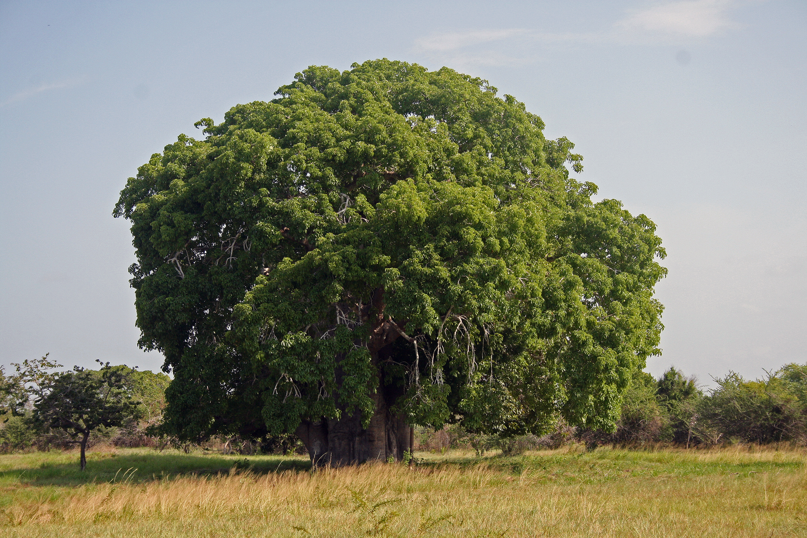
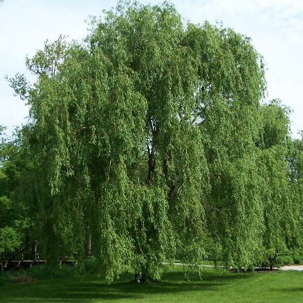
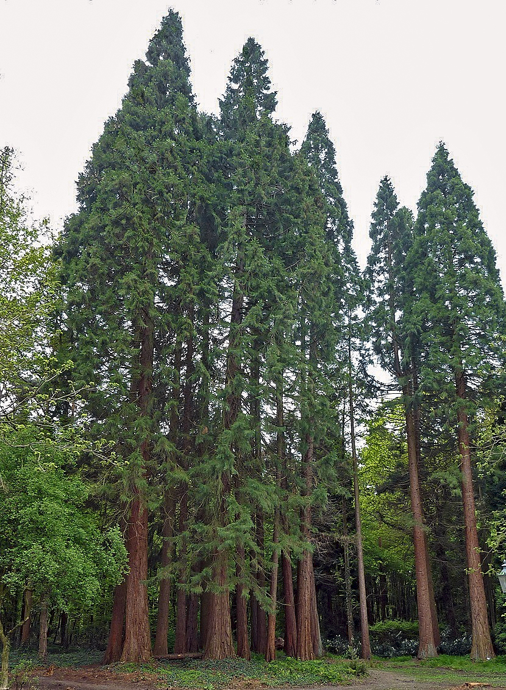
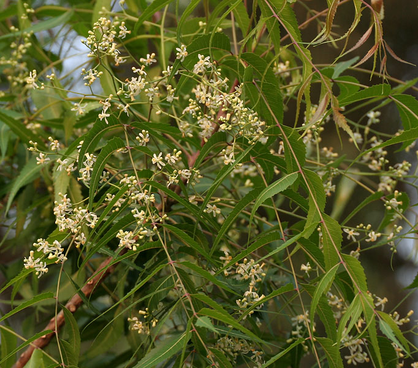
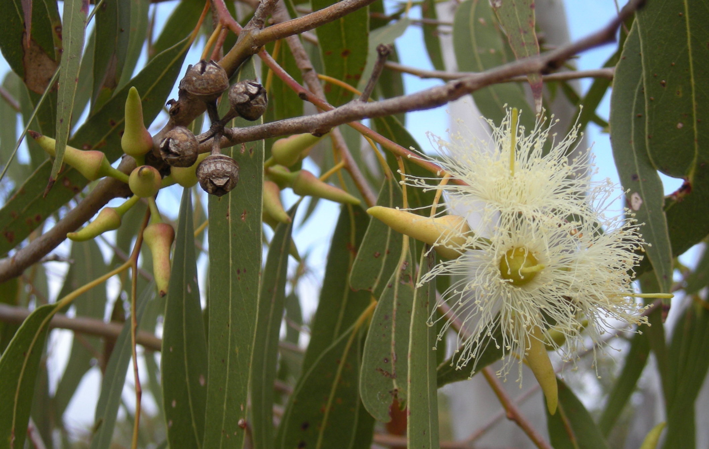
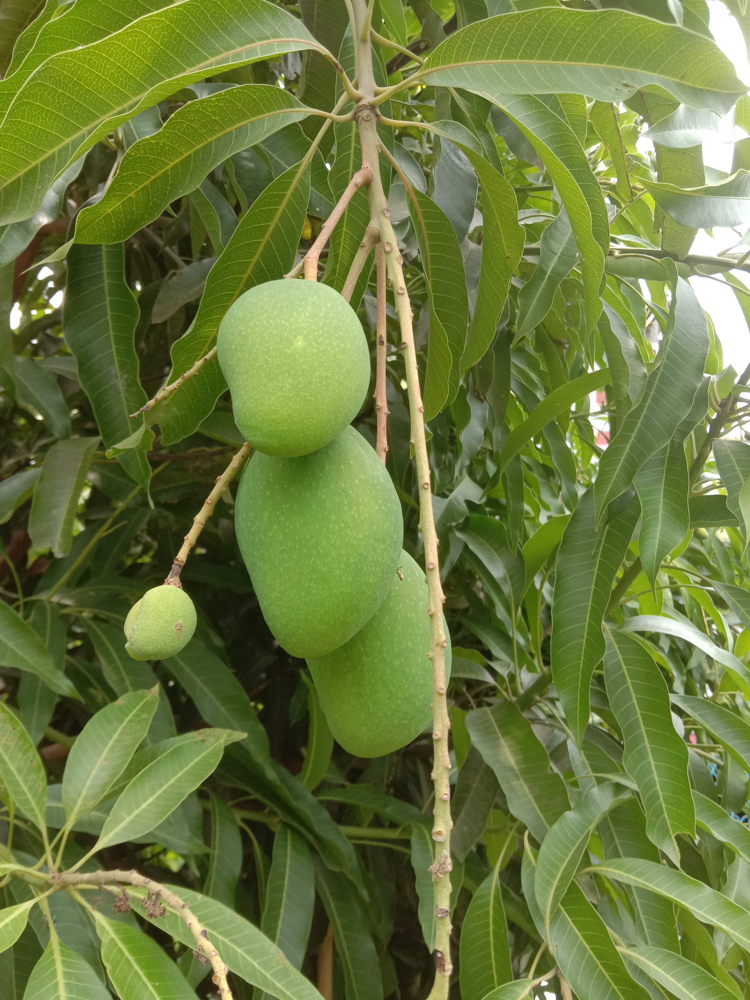
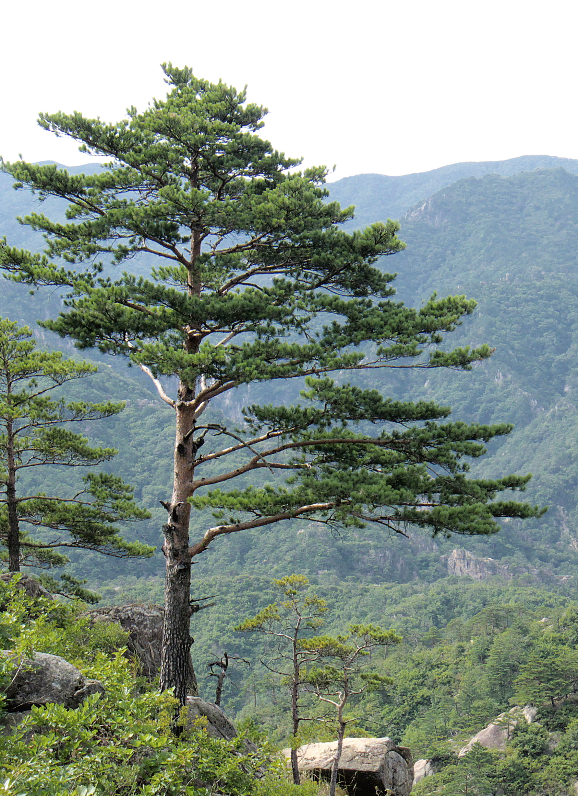
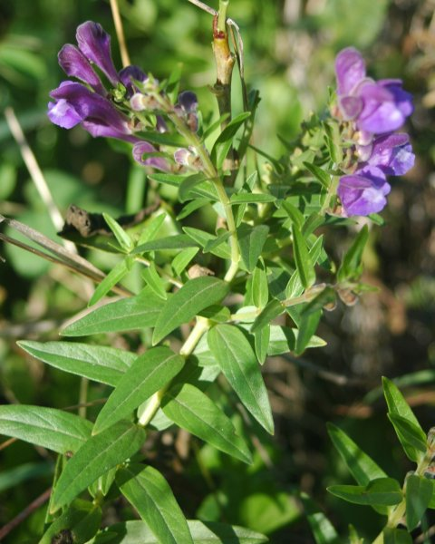

| Name |
Location |
Soil Type |
Characteristics |
Benefits |
Picture |
| Baobab (Adansonia digitata) |
Africa, Madagascar, and Australia |
Sandy or loamy soils |
Large, bottle-shaped trunk, thick branches, and can reach up to 30 meters tall. Can store up to 120,000 liters of water in its trunk |
Rich in Vitamin C, calcium, and iron. Its fruit and leaves have been used in traditional medicine to treat various ailments. Good for holding the land, particularly in sloped or loose-soil regions that are vulnerable to erosion. |

|
| Banyan (Ficus benghalensis) |
India, Sri Lanka, Pakistan, and Bangladesh |
Clayey or alluvial soils |
Large, spreading tree with a wide canopy and aerial roots that grow into additional trunks. |
Considered sacred in Hinduism and Buddhism, and its leaves are used in traditional medicine to treat various illnesses. |
|
| Oak (Quercus spp.) |
Worldwide, but most commonly found in North America and Europe. |
Well-drained soils, but can also tolerate poor soils. |
Large, long-lived tree with deep roots and a spreading crown. |
Provides habitat for various species of wildlife, including birds and mammals. Good for holding the land, especially on slopes or in places with loose soil that are prone to erosion. |

|
| Willow (Salix spp.) |
North America, Europe, and Asia |
Moist, well-drained soils |
Fast-growing tree with narrow, lance-shaped leaves and flexible branches. |
Used for erosion control, bioengineering, and land reclamation. Its bark and leaves contain salicin, which can be used to make aspirin. |

|
| Redwood (Sequoia sempervirens) |
California, USA |
Moist, well-drained soils |
Tall, coniferous tree that can reach over 100 meters tall and 7 meters in diameter. |
Provides habitat for various species of wildlife, including birds and mammals. Its wood is used for furniture, flooring, and building material. |

|
| Neem (Azadirachta indica) |
India, Bangladesh, Pakistan, and Nepal |
Sandy or loamy soils |
Fast-growing evergreen tree with a wide, spreading crown and grayish-brown bark. |
Used in traditional medicine to treat various ailments, and its oil is used in cosmetics and pesticides. |

|
| Eucalyptus (Eucalyptus spp.) |
Australia, but now also found in other parts of the world, including California and India. |
Well-drained soils |
Fast-growing tree with aromatic leaves and distinctive, smooth bark that peels away in strips. |
Provides habitat for various species of wildlife, including birds and mammals. Excellent for retaining land, especially on slopes or in regions with loose soil that are prone to erosion. |

|
| Mango (Mangifera indica) |
India, Southeast Asia, and South America |
Sandy or loamy soils |
Large, evergreen tree with a spreading crown and dark green leaves. |
Provides shade and its fruit is consumed worldwide for its delicious taste and health benefits. |

|
| Pine (Pinus spp.) |
Worldwide, but most commonly found in North America and Europe. |
Well-drained soils |
Coniferous tree with needles and cones. |
Provides habitat for various species of wildlife, including birds and mammals. Good for holding the land, especially on slopes or areas with loose soil that are prone to erosion. |

|
| Baikal Skullcap (Scutellaria baicalensis) |
China, Russia, and Korea |
Well-drained soils |
Perennial herb with blue-purple flowers and small, oval-shaped leaves. |
Known for its medicinal properties and is used in traditional Chinese medicine |

|